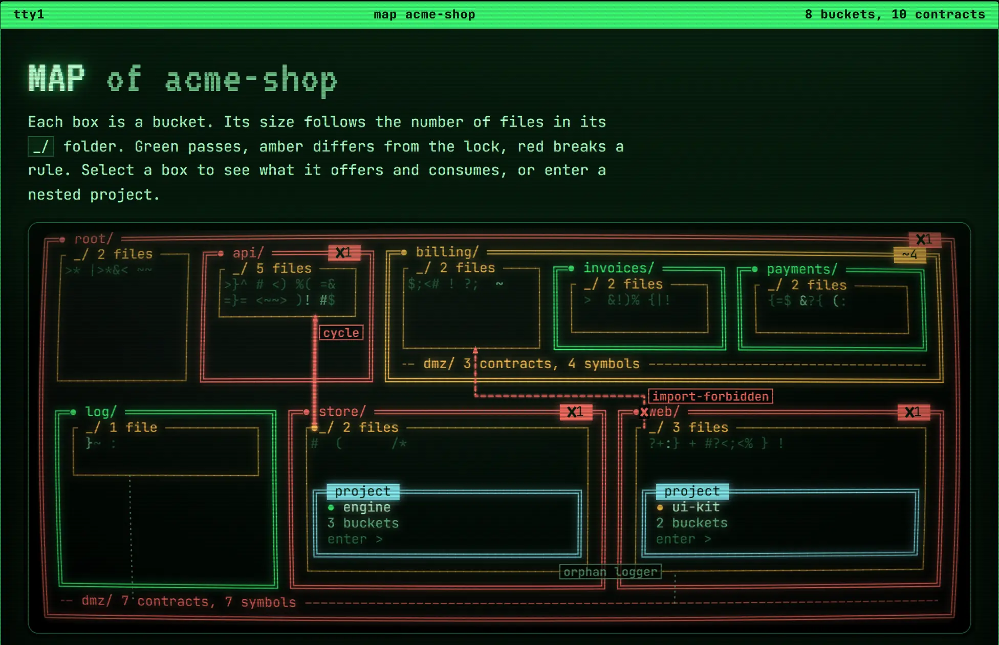
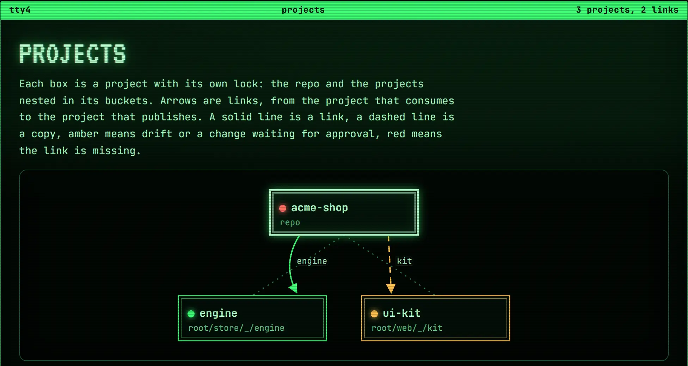

buckets check
- Who runs it
- The AI, the pre-commit hook and CI
- What it does
- Checks the rules and compares the project with the lock
slopbuckets splits a project into sealed folders called buckets. Inside a bucket, the AI writes whatever it wants. Between buckets, every import goes through a contract file in a dmz/ folder, and a human approves every change to those contracts.
npm install -g slopbuckets
Each import is there because someone chose it. The whole dependency graph fits on one screen.
An AI agent solves each task by the shortest path, and the shortest path is usually an import from some other part of the project.
Code review does not catch it, because each import looks reasonable on its own.
slopbuckets turns each part of the project into a bucket. Inside a bucket, the AI writes whatever it wants in the _/ folder. It cannot import from another bucket directly.
A DMZ file re-exports named symbols and nothing else. Here invoices gets the logger from log in 2 hops, one file per hop. A direct import fails the check with import-forbidden.
buckets.lock.json stores the bucket tree, the config, every DMZ file and the type signature of every symbol a DMZ file exports. The AI cannot edit it, or the config.
The AI adds audit to 2 DMZ files. buckets check exits with code 2, because the rules pass but the contracts differ from the lock. The AI runs buckets refresh --web in the background and sends the link it prints to the human.
The page lists every change and shows a confirmation code. Approve opens a window of the operating system that asks for that code, and the AI cannot type into it. The human types the code, the lock is written, and buckets check passes with exit code 0.
The terminal output in scenes 7 and 8 and in the shell below comes from the real CLI, run on a sample project. Scene 8 draws the review page and the confirmation window in text mode, with their real texts and the real confirmation code.
An AI agent solves each task by the shortest path, and the shortest path is usually an import from some other part of the project. After a few hundred tasks, every module depends on every other module.
Code review does not catch this, because each import looks reasonable on its own. slopbuckets moves the boundaries out of review and into a check that fails the build.
Because the contracts are fixed, the code inside a bucket is disposable. If a bucket turns into a mess, you can delete its code and have the AI rewrite it from the contracts.
A human owns the dependency graph The AI owns the code inside each node
The root of the project is a bucket called root. Each bucket contains only 3 kinds of things:
_/, the bucket's own code, where the AI can create any files and foldersdmz/, the contracts between its children, present when the bucket has childrenThe tree is 2 levels deep by default. You can change the limit in the config.
root/ dmz/ _/ main.ts, app.module.ts log/ _/ billing/ dmz/ _/ billing.module.ts invoices/ _/ payments/ _/ buckets.config.json buckets.lock.json
Buckets in green, own code in amber, contracts in cyan.
Inside P/dmz/, the folder is the provider and the file is the consumer. dmz/sql/http.ts lists everything http takes from sql. Two names are reserved. .self is the bucket's own code in P/_/, and .parent is what P receives from the level above.
| File in billing/dmz/ | Meaning |
|---|---|
payments/invoices.ts | what invoices takes from payments |
.self/invoices.ts | what invoices takes from billing/_ |
invoices/.self.ts | what billing/_ takes from invoices |
.parent/invoices.ts | what invoices takes from outside billing |
invoices/.parent.ts | what invoices exposes outside billing |
invoices/.external.ts | what invoices publishes to other projects, values and types |
A DMZ file can only re-export named symbols. Here invoices gets the logger from log:
// root/dmz/log/billing.ts export { logger, } from '@root-k3x9pm2a/log/_/logger';
// root/billing/dmz/.parent/invoices.ts export { logger, } from '@root-k3x9pm2a/dmz/log/billing';
// root/billing/invoices/_/create-invoice.ts import { logger, } from '@root-k3x9pm2a/billing/dmz/.parent/invoices';
Each hop is one file. To find out what a bucket uses, open its DMZ files.
buckets.lock.json records the last state a human approved: the bucket tree, the config, every DMZ file, the type signature of every symbol a DMZ file exports, the nested projects, and each link with the alias of its origin and the signatures the origin publishes.
If the AI changes the signature of an exported function without touching any DMZ file, the signature hash changes and the check fails.
The AI can edit any file, DMZ files included. It cannot edit the lock. When the AI changes a contract, buckets check exits with 2 until a human approves the change. In an agent session the approval goes through buckets refresh --web:
buckets refresh --web in the background. It refuses to start while a rule is broken. It prints the changes and, on its last line, a link to a page on 127.0.0.1.The agent has the link, but it cannot type into that window. If the project changes after the page loaded, the approval fails. The command exits with 0 after an approval, and with 1 after a cancel, 30 minutes without activity on the page or 2 hours in all. Over SSH, in a container or on a machine without a desktop it refuses at the start, and the human runs buckets refresh in a terminal instead. The approval flow has the details.
buckets refresh --web and sends the link to a human.On a fresh project, before anyone has approved a state, the check prints this and exits with code 2:
$ buckets check Lock differences Only a human approves these, with `buckets refresh` or `buckets refresh --web`. + lock-missing buckets.lock.json buckets.lock.json does not exist yet, so no state has been approved. A human must run `buckets refresh` to create it. buckets check: 1 lock difference. Exit code 2: the rules pass, but the state differs from buckets.lock.json. Do not edit the lock and do not run plain `buckets refresh`. Run `buckets refresh --web` in the background, send the link it prints to the human with a summary of which DMZ files changed and why, and wait for the command to finish. The human can also run `buckets refresh` in a terminal.
_/, dmz/ and child buckets, within maxDepth. Every bucket has a _/, a bucket without children has no dmz/, and a bucket name cannot start with ..
folder-loose-filefolder-max-depthfolder-missing-codefolder-unexpected-dmzfolder-invalid-namebuckets link add.
folder-symlinkdmz/<provider>/<consumer>.ts, where both names exist. Each re-export points only where that DMZ file may reach, one level per file, and never into a nested project.
dmz-pathdmz-targetexport { name } from and export type { Name } from statements. Renames, export *, default exports, imports and local declarations fail.
dmz-syntax_/ code. Importing it without referencing it does not count. When a chain of re-exports ends unused, the check reports the whole chain in one run.
dmz-orphan@root-k3x9pm2a. Relative imports fail, and so does an import that resolves to nothing.
import-relativeimport-unresolvedX/_/ imports only from X/_/, from DMZ files where X is the consumer, from packages in package.json and from Node built-ins.
import-forbiddenimport-undeclared-packageimport(), require(), createRequire, import.meta.glob and import * as from a DMZ file fail. vi.mock, jest.mock and new URL('...', import.meta.url) count as imports of their string.
import-dynamicimport-namespace-dmzdeclare global, export as namespace and /// <reference> fail.
import-globalaccess lines, such as root/teams/** -> root/sql, each import between buckets passes them. The most specific matching line decides, and an allow line and a deny line that each win on one side make the import ambiguous until a human adds a more specific line.
access-deniedaccess-ambiguousaccess-unknown-buckettsconfig.json covers the root folder, keeps noUnusedLocals on so an unused import cannot count as a use, and maps the alias.
config-invalidproject-configbuckets.config.json inside the root folder lives only in a subfolder of a bucket's _/, where it starts a nested project. The nested project needs its own tsconfig.json, and the tsconfig.json around it must exclude its folder.
project-misplacedproject-configbuckets.links.json is on disk. Code imports a link only through the .external.ts files of its origin, and every package the linked files import resolves for both tsc and the runtime.
link-missinglink-forbidden-importlink-missing-dependencyEvery rule id, with what it means and how to fix it, is in the rules reference.
A broken rule makes the check exit with code 1. The report groups the problems by file and tags each one with its rule id.
# the AI imports the logger with a relative path $ buckets check root/billing/invoices/_/create-invoice.ts line 1 import-relative Relative import "../../../log/_/logger". slopbuckets forbids relative imports everywhere, even inside the same _/ folder. Rewrite it with the alias, as @root-k3x9pm2a/<path from root>. Orphan contracts No _/ code imports these DMZ symbols, directly or through another DMZ. dmz-orphan logger (origin root/log) root/dmz/log/billing.ts line 1 root/billing/dmz/.parent/invoices.ts line 1 To fix, delete `logger` from each file above (delete a file once it is empty), or import it by name from root/billing/dmz/.parent/invoices.ts in the consumer's _/ code. buckets check: 3 violations in 3 files. Exit code 1: bucket rules are broken. Fix every violation above, then run `buckets check` again. If a violation cannot be fixed, explain why in your final message.
config config-invalid project-config project-misplaced folders folder-loose-file folder-max-depth folder-missing-code folder-unexpected-dmz folder-invalid-name folder-symlink dmz dmz-path dmz-syntax dmz-target dmz-orphan imports import-relative import-dynamic import-unresolved import-forbidden import-namespace-dmz import-undeclared-package import-global graph graph-cycle access access-denied access-ambiguous access-unknown-bucket links link-missing link-forbidden-import link-missing-dependency
When the rules pass but the project differs from the lock, the check exits with code 2 and lists each difference by kind. With nested projects, the check exits with the most serious code of any project, in the order 3, 1, 2, 0.
lock-missing bucket-added bucket-removed config-changed dmz-added dmz-removed dmz-changed symbol-added symbol-removed signature-changed project-added project-removed link-added link-removed link-changed link-drift
buckets inspect serves a read-only page on 127.0.0.1 with the state of the project and of every project nested in it. The page updates while files change. It never writes to the project and never approves anything, so the AI may run it at any time.

buckets inspect, run on a sample project with 3 projects, a cycle and a forbidden import.dmz/ folder, providers in rows and consumers in columns, with the symbols and signatures of each contract.buckets.lock.json, with the contract graph at each one and what it changed.--export svg prints the map, --export mermaid prints the bucket graph of every project as a flowchart, and --export html prints the whole page as one file that works without a server, like the demo below. --out <file> writes a file.buckets inspect --json prints the same state and exits: projects, buckets, contracts with symbols, origins and chains, imports between buckets, violations, lock differences and links. An agent reads it to plan a change before it touches a contract.
$ buckets inspect buckets inspect: 1 project, 5 buckets, 6 contracts, every rule passes. The page is read only and updates while files change. Press Ctrl+C to stop. It stops by itself after 30 minutes without an open page. http://127.0.0.1:52818/
The inspect guide covers every view, and the snapshot reference describes the JSON.
A generated shop with about 300 buckets, a nested project, a link to another project, violations, lock differences and three approvals in git. Open the map one level at a time or show every bucket at once, select a box, read the DMZ matrix, trace a symbol, step through the timeline or run an impact simulation. The page runs in your browser from one HTML file, with no server behind it.
Open full screenProduced with buckets inspect --export html.
A folder inside a bucket's _/ that has its own buckets.config.json and tsconfig.json is a nested project, with its own root folder, alias, lock and rules. Run buckets init in that folder to create one. It picks an alias that no enclosing project uses and adds the folder to exclude in the enclosing tsconfig.json. The enclosing project does not scan the nested one, and the two never import from each other. buckets check checks the current project and every nested one, each against its own lock.
A link works like a git submodule. It brings the source code of another project into a bucket, and that bucket imports values and types from it and compiles and runs them with its own tools. slopbuckets compiles nothing.
<parent>/dmz/<bucket>/.external.ts, with the same syntax as any DMZ file. Other projects can import only these files.buckets link add <name> <origin project folder> links the whole origin project: <bucket>/_/links/<name>/ becomes a junction or symlink to its root folder. The link stays out of git, and buckets link sync recreates it after a clone.--copy, it copies only the files that the .external.ts files reach, without changing them. The copy goes into git. When the origin changes, the check reports link-drift until buckets link update copies it again.link add records the link in buckets.links.json, maps the origin's alias to the link folder in the paths of tsconfig.json, adds the folder to exclude, and prints the alias for Vite, Next or webpack. It refuses an alias that this project or another link already uses, which is why buckets init generates a unique one..external.ts files. An import of any other file of the link fails with link-forbidden-import.tsc in the consuming project, and from the origin's own folder, where Node and bundlers load it at runtime. A copy resolves both from the consuming project. A package that does not resolve fails with link-missing-dependency, which says which side lacks it.A new or removed link and a changed signature of a published symbol are lock differences that the consuming project's human approves. A change inside the origin that leaves the published signatures alone needs no approval.
// api/root/dmz/server/.external.ts export { listInvoices } from '@root-m4tz8wq6/server/_/routes'; export type { InvoiceDto } from '@root-m4tz8wq6/server/_/routes';
acme$ buckets link add api ../api --bucket root/billing/invoices Created root/billing/invoices/_/links/api as a folder symlink to ../api/root/ and added it to .gitignore. Other clones recreate it with `buckets link sync`. Registered it in buckets.links.json with the alias @root-m4tz8wq6. Added "@root-m4tz8wq6/*": ["./root/billing/invoices/_/links/api/*"] to "compilerOptions.paths" in tsconfig.json. Added "exclude": ["root/billing/invoices/_/links/api"] to tsconfig.json, so `tsc` here compiles only the linked files that code imports, not the whole linked project. Code in root/billing/invoices/_/ imports the linked project only through its published files: '@root-m4tz8wq6/dmz/server/.external'. Values and types are both allowed. Importing any other file of the link fails the check with link-forbidden-import. The packages the linked files import must resolve in two places. At runtime, Node and bundlers follow the link and load them from the origin: run `npm install` in ../api. For type checking, `tsc` here reads the linked files through the link path and looks the packages up from this project: install each one (or its @types package) in this project too, for example as a devDependency. `buckets check` reports a missing one as link-missing-dependency and says which side lacks it. The check fails with exit code 2 until a human approves the change with `buckets refresh` (an agent asks with `buckets refresh --web`).
// acme/root/billing/invoices/_/list.ts import { listInvoices, type InvoiceDto, } from '@root-m4tz8wq6/dmz/server/.external';
# api adds a parameter to listInvoices acme$ buckets check Lock differences Only a human approves these, with `buckets refresh` or `buckets refresh --web`. ~ link-changed root/billing/invoices/_/links/api listInvoices buckets check: 1 lock difference. Exit code 2: the rules pass, but the state differs from buckets.lock.json. Do not edit the lock and do not run plain `buckets refresh`. Run `buckets refresh --web` in the background, send the link it prints to the human with a summary of which DMZ files changed and why, and wait for the command to finish. The human can also run `buckets refresh` in a terminal.
# the same link with --copy root/billing/invoices/_/links/api/ dmz/server/.external.ts server/_/routes.ts
Real output of the CLI, run in a project acme next to a project api. Projects and links and the links registry reference have the details.

buckets inspect. A solid line is a link, a dashed line is a copy, and amber means the copy drifted or waits for approval.buckets init installs a skill that teaches the agent the rules, and the hooks of your coding agent. It sets up Claude Code by default. buckets init --agent codex sets up another agent, and --agent auto sets up every agent whose folder is already in the project. Works with:
AGENTS.md block, the skill, the git hook and CIEvery hook fails open. On a machine without the buckets command, the agent's calls go through, and the git hook from buckets init --git-hook and CI hold the rules. Supported agents compares the agents. For Claude Code, the 4 hooks do this:
| Hook | What it does |
|---|---|
PreToolUse | Denies writes to any buckets.lock.json or buckets.config.json, shell commands that name either file and any buckets refresh without exactly the --web flag, even in bypass permission mode. buckets refresh --web is the one form it allows, also in the background with nohup or a trailing &, with its output redirected to a file or piped to tee. A redirection into the lock is denied. |
Stop | Runs buckets check on every project before the agent ends its turn |
SubagentStop | Runs buckets check before a subagent hands back its work |
PostToolUse | Checks each edited file and reports a forbidden import right away |
When the check exits with 2, the skill tells the agent to run buckets refresh --web in the background, send the link with a summary, and wait. A nested buckets init skips the hooks and the skill, because the enclosing project's hooks cover it. In a session opened in a folder above several projects, with the hooks in that folder's or your user settings, each hook works on the project of the file or command, and Stop checks only the projects the session touched. The Claude Code guide has the details of each hook, and each agent has its own page.
Threat model. slopbuckets stops an agent that takes shortcuts, not one that sets out to break the rules. The lock hook compares text and, on Windows, any process on the same desktop can type into the confirmation window, so review the lock diff in pull requests. Read the threat model.
You are the human in the sample project from the README. Run check, approve the state with refresh or refresh --web, then let the agent break something with slop or change a contract with contract. inspect and link work too. The shell runs in your browser and prints the output of the real CLI for that state, wrapped to the width of this box. The review page, the confirmation window and the inspect page are simulated, and the shell says so when it shows them. Nothing is installed or sent anywhere.
Turn on JavaScript to type commands here.
npm install -g slopbuckets
$ npm install -g slopbuckets $ cd your-project $ buckets init # config, unique alias, hooks and skill $ buckets refresh # approve the first state in your terminal $ buckets refresh --web # or approve it on a local page
buckets init generates the import alias of the project, @<root folder>-<8 characters> such as @root-k3x9pm2a, and maps it in tsconfig.json. Every project gets a different one, so projects can link each other without a clash. Every import inside the project starts with it, as in @root-k3x9pm2a/billing/dmz/.parent/invoices.
buckets init never writes the lock. Only a human approves a state, with buckets refresh in an interactive terminal or in the confirmation window that buckets refresh --web opens. The getting started guide walks through the setup step by step.
The CLI is a global install because it is meant to support more languages than TypeScript. Each project pins the CLI version in its lock, and buckets check refuses to run with a different version. In CI, install the version the lock asks for. When the project uses links, recreate them first, because links in link mode are not in git:
$ npx slopbuckets@$(node -p "require('./buckets.lock.json').cli") link sync $ npx slopbuckets@$(node -p "require('./buckets.lock.json').cli") check
Paste this prompt into Claude Code or another coding agent, opened in your project folder. The agent reads llms.txt and follows its install steps.
Install slopbuckets in this project. Read https://nicolascaous.github.io/slopbuckets/llms.txt and follow the steps for agents.
npm install -g slopbuckets.tsconfig.json and the typescript package, and adds what is missing.buckets init --yes and shows you what it changed.buckets refresh --web in the background and sends you the link.The agent asks you to approve the first lock, on the review page or with buckets refresh in your own terminal. It never types the confirmation code.